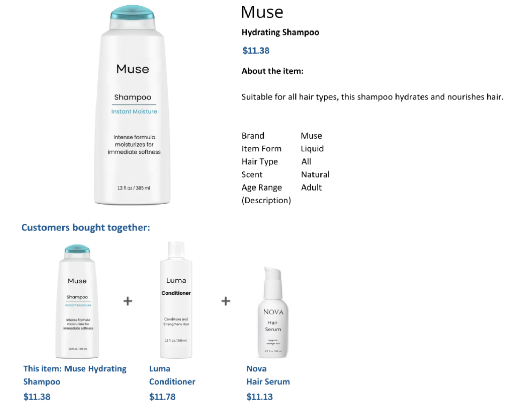
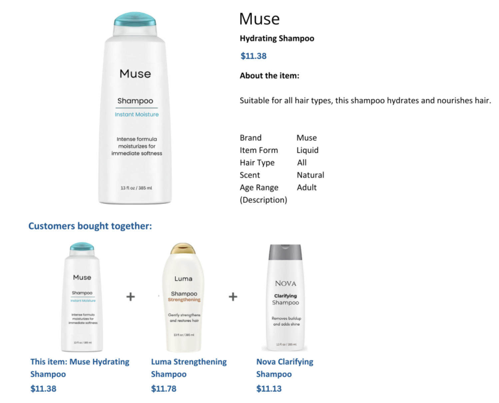
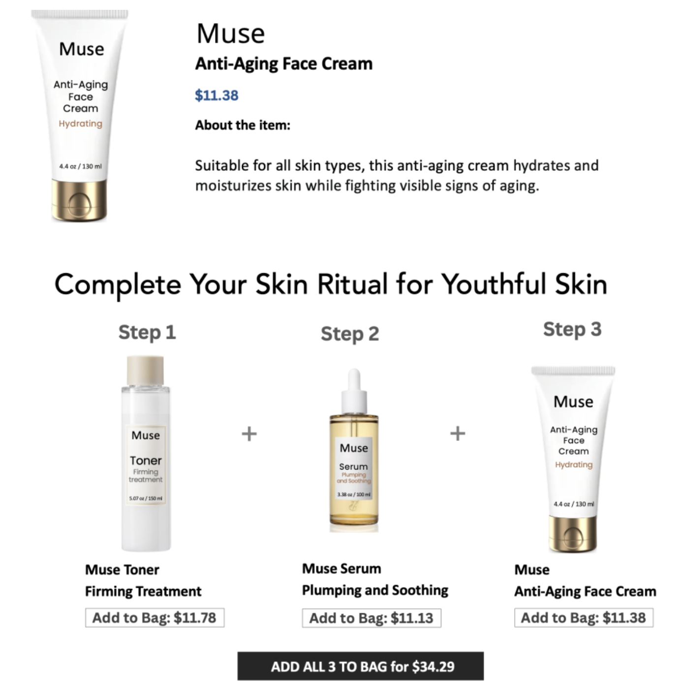

Question
Back to projects
E-commerce · Marketing analytics
Recommendation Systems & Personalization
How complementary and substitute recommendations affect consumer perceptions and purchase likelihood for brands.
16Experiments
~3,200Participants
2Recommendation types
Approach
Experiments compared recommendation type, perceived effectiveness, purchase likelihood, and brand perceptions.
Finding
Complementary recommendations increased perceived effectiveness and purchase likelihood.
Business use
Guidance for e-commerce recommendation strategy and labels.
Study stimuli
Complementary vs. Substitute Recommendations
These examples isolate recommendation type while keeping the focal product consistent.




Methods
Experiment Design, Data Analysis (SPSS/Python), and Research Proposal
Analysis focused on purchase likelihood, perceived effectiveness, and brand perception.